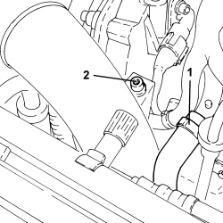
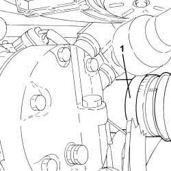
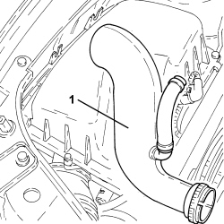
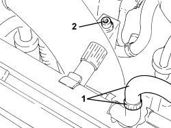
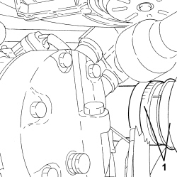
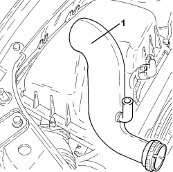

1048A50 TURBOCHARGER AIR INTAKE PIPE - R.R.
- Path
- Procedures > 10 ENGINE > 1048 ENGINE AIR SUPPLY CIRCUIT > 1048A VACUUM AIR CIRCUIT > 1048A50 TURBOCHARGER AIR INTAKE PIPE - R.R.
- Kind
- repair procedure (removal / refitting; the operation number is the code)
- Applies to
- engines: 1.9 JTD 8v, 1.9 JTD 16v; all production periods
- Interactive page
- https://sloeber94.github.io/elrnDB-fCrm/en/#/194000308
Applies to: engines: 1.9 JTD 16v; all production periods
 Removing
Removing
 Refitting
Refitting- Position the vehicle on a lift.
Op. 1016A10 SOUND-PROOFING COVER - R.R
Op. 1048B19 TURBOCHARGER AIR OUTLET HOSE -R.R.
Op. 1048A42 SLEEVE FROM FLOW METER TO TURBO CHARGER AIR INLET PIPE - R + R
1. Loosen the band and disconnect the engine oil vapour recovery pipe.
2. Undo the bolt fixing the turbocharger air inlet pipe to the mounting bracket.

Applies to: engines: 1.9 JTD 16v; all production periods
Op. 7055B54 UNDER ENGINE PROTECTION/GUARD - R.R.
1. Loosen the band and disconnect the turbocharger air inlet pipe, turbocharger side.

Applies to: engines: 1.9 JTD 16v; all production periods
1. Remove the turbocharger air intake pipe.

Applies to: engines: 1.9 JTD 16v; all production periods
Refitting
Removing- Place the turbocharger air intake pipe in its housing.
- Connect the turbocharger air inlet pipe, turbocharger side, and tighten the band.
Op. 7055B54 UNDER ENGINE PROTECTION/GUARD - R.R.
- Tighten the bolt fixing the turbocharger air inlet pipe to the mounting bracket.
- Connect the oil vapour recovery pipe and tighten the band.
Op. 1048A42 SLEEVE FROM FLOW METER TO TURBO CHARGER AIR INLET PIPE - R + R
Op. 1048B19 TURBOCHARGER AIR OUTLET HOSE -R.R.
Op. 1016A10 SOUND-PROOFING COVER - R.R
- Remove the vehicle from the lift.
Applies to: engines: 1.9 JTD 8v; all production periods
Removing
Refitting- Position the vehicle on a lift.
Op. 1016A10 SOUND-PROOFING COVER - R.R
Op. 7055B54 UNDER ENGINE PROTECTION/GUARD - R.R.
Op. 1048B17 HEAT EXCHANGER AIR INLET HOSE - R.R.
Op. 1048A42 SLEEVE FROM FLOW METER TO TURBO CHARGER AIR INLET PIPE - R + R
1. Loosen the band and disconnect the engine oil vapour recovery pipe.
2. Undo the bolt fixing the turbocharger air inlet pipe to the mounting bracket.

Applies to: engines: 1.9 JTD 8v; all production periods
1. Loosen the band and disconnect the turbocharger air inlet pipe, turbocharger side.

Applies to: engines: 1.9 JTD 8v; all production periods
1. Remove the turbocharger air intake pipe.

Applies to: engines: 1.9 JTD 8v; all production periods
Refitting
Removing- Place the turbocharger air intake pipe in its housing.
- Connect the turbocharger air inlet pipe, turbocharger side, and tighten the band.
- Tighten the bolt fixing the turbocharger air inlet pipe to the mounting bracket.
- Connect the oil vapour recovery pipe and tighten the band.
Op. 1048A42 SLEEVE FROM FLOW METER TO TURBO CHARGER AIR INLET PIPE - R + R
Op. 1048B17 HEAT EXCHANGER AIR INLET HOSE - R.R.
Op. 7055B54 UNDER ENGINE PROTECTION/GUARD - R.R.
Op. 1016A10 SOUND-PROOFING COVER - R.R
- Remove the vehicle from the lift.
Topics linked from this page (5)
- 1016A10 SOUND-PROOFING COVER - R.R
- 1048A42 SLEEVE FROM FLOW METER TO TURBO CHARGER AIR INLET PIPE - R + R
- 1048B17 HEAT EXCHANGER AIR INLET HOSE - R.R.
- 1048B19 TURBOCHARGER AIR OUTLET HOSE -R.R.
- 7055B54 UNDER ENGINE PROTECTION/GUARD - R.R.
Topics that link to this page (20)
- 1016C10 SINGLE CYLINDER HEAD - R.R. AND REPLACE GASKET
- 1020D14 FRONT CRANKSHAFT OIL SEAL COVER - R.R AND REPLACE SEALS FOR VERSIONS WITH OIL PUMP ON CRANKSHAFT, TIMING SIDE
- 1020D18 FRONT CRANKSHAFT COVER OIL SEAL - R.R.
- 1032B10 TOOTHED TIMING BELT - R + R FOR TIMING ADJUSTMENT OR REPLACEMENT
- 1032C42 TIMING BELT TENSIONER SUPPORT - R.R
- 1036L10 CAMSHAFTS IN CAMSHAFT HOUSING - R.R. - INCLUDES CAMSHAFT HOUSING REPLACEMENT IF NECESSARY
- 1036L30 FRONT OIL SEAL FOR CAMSHAFT IN CAMSHAFT HOUSING - REPLACE
- 1060E10 DIESEL INJECTION PRESSURE PUMP - R.R.
- 1060E30 PRESSURE PUMP DRIVE PULLEY - R.R.
- 1060E40 PRESSURE PUMP SUPPORT - R.R.
- 1064A27 PIPE BETWEEN VACUUM RESERVOIR AND ACTUATOR CONTROL SOLENOID VALVE - R.R.
- 1072B10 INLET MANIFOLD - R + R AND REPLACE SEAL
- 1072C44 EXHAUST MANIFOLD HEAT SHIELD - R+R
- 1080B40 CATALYTIC PRE-CONVERTER - R.R
- 1080B62 CATALYTIC CONVERTER - R + R
- 1084B40 ENGINE OIL DELIVERY PIPE TO TURBOCHARGER - R + R
- 1084B42 ENGINE OIL RETURN PIPE FROM TURBO - R + R
- 1088D10 LOWER RADIATOR COOLANT OUTLET HOSE - R.R.
- 1088D24 WATER PUMP RIGID COOLANT INLET PIPE - R.R.
- 3330D03 SERVO BRAKE / BRAKE PUMP ASSEMBLY - R.R. FOR RIGHT DRIVE VERSIONS